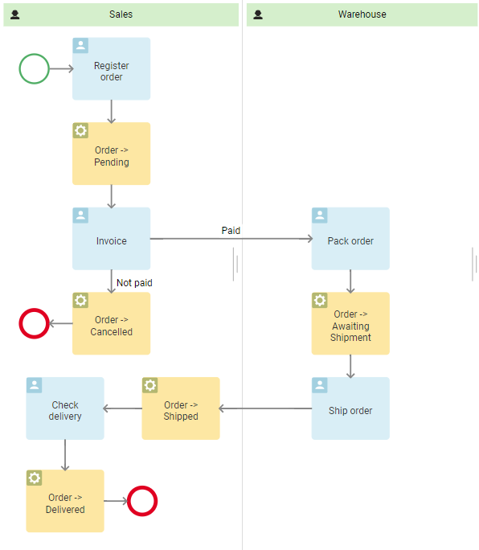
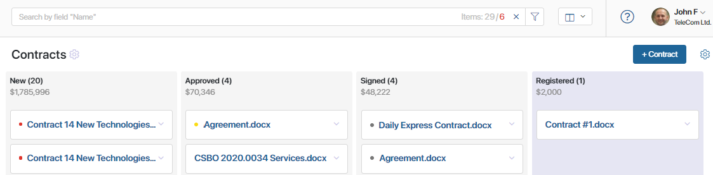
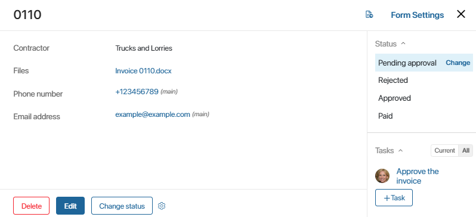
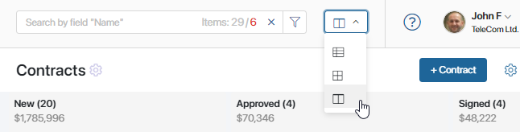
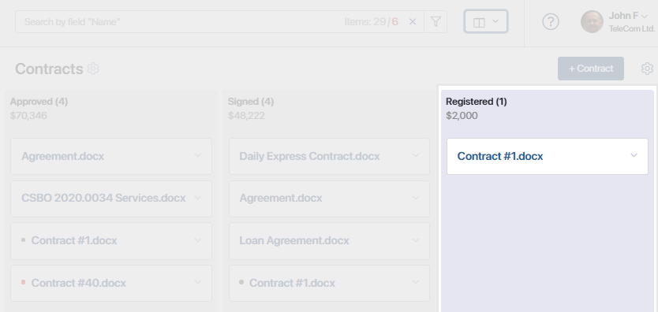
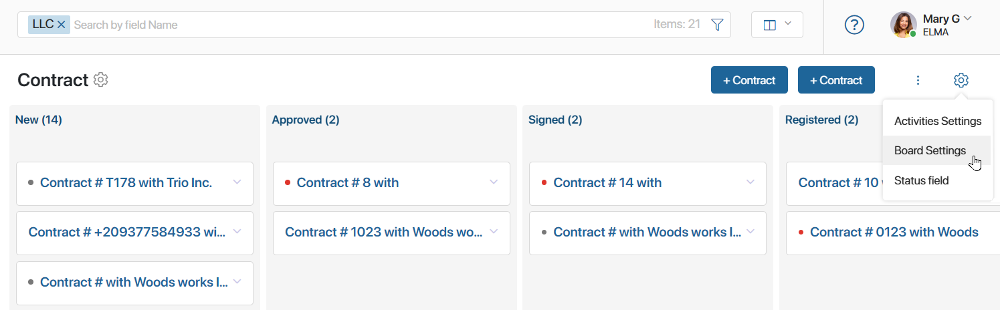
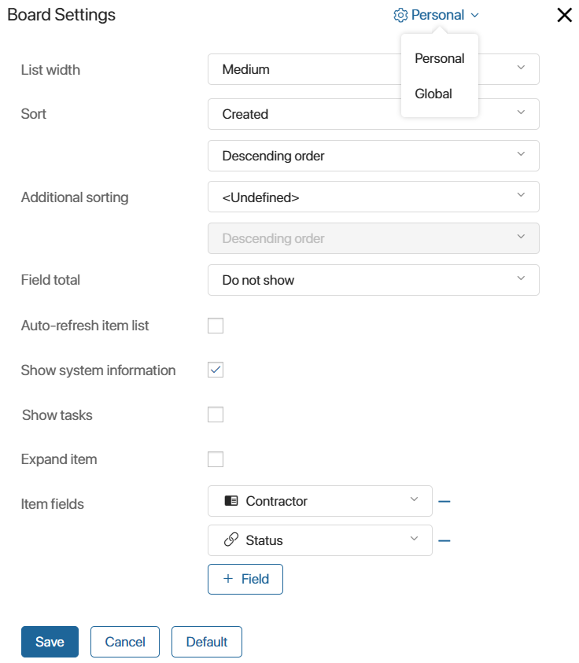
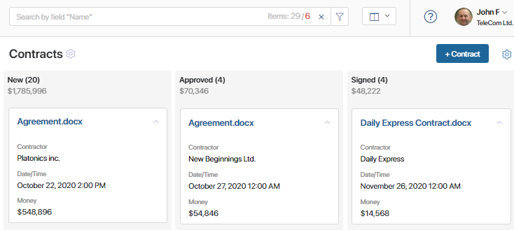
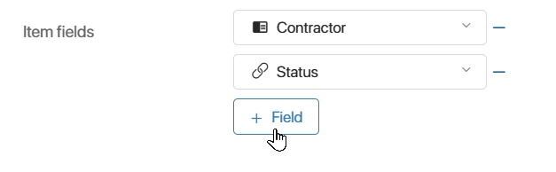

In BRIX, the Kanban board view helps you monitor the progress of a business process. For example, you can see how many orders are currently being processed, check their processing stages, and see whether there are overdue tasks associated with them.
How to use a Kanban board
First, create a business process that will describe the app’s behavior. For example, the process associated with the Order app will include all operations employees need to perform, from processing the order to delivering the product to the customer.
Next, set up order statuses and add them to the process. Statuses of an order may be Pending, Awaiting Shipment, Shipped, Delivered, and Canceled.

As the process is being executed, the status of the order changes automatically, and the order item moves to the next column of the Kanban board from left to right. The colored indicators next to app items’ names help you make sure that tasks associated with them are completed on time. A gray dot means that there are tasks associated with the item, but they aren’t overdue. A yellow dot means that the deadline for a task is within less than a day. Finally, a red dot marks items with overdue tasks.

The task itself, the responsible user, and the current status of the item are indicated on the item page, in the sidebar.

Set up the Kanban board view
Open the app page. In the top right corner, select the Kanban board view.

Each column represents a certain app status. Columns representing final statuses have a different background color.

As the business process is being executed, the app item status changes, and the item moves accordingly on the Kanban board.
You can expand an item on the Kanban board to see detailed information.
If you click a column name, a page with a table listing all app items in this status will open.
If manual status change is enabled, users can drag items from one column to another, and their statuses will change accordingly. However, we recommend that you avoid using this option, as automatic change of statuses offers better control and transparency.
начало внимание
Only users with permission to edit app items in the app can drag and drop items on the Kanban board.
конец внимание
Board settings
To manage the settings of the Kanban board, click the gear icon in the top right corner of the app page and select Board Settings.

In the opened window, you can customize both the board itself and the item pages. Board settings are divided into two types:
- Global. The system administrator defines the settings that apply by default to all employees and are exported with the app.
- Personal. Any user can set the parameters for themself. You can always return to the global settings by clicking the Default button.
The administrator can switch between global and personal settings at the top of the settings window.

To change the Kanban board settings, fill in the fields:
- List width. Select the width of the board columns.
- Sort. Determine by which parameter the items in the columns will be sorted. App system fields such as Index and Created are available, as well as properties for which the system administrator has enabled the Search and sort by field option. By default, items are sorted by the date they were created. Next, choose if the items need to be sorted in ascending or descending order.
- Additional sorting. Select a field for secondary sorting of app items. For example, if app items are sorted by the Name field and some of them have identical names, you can set additional sorting by creation date. System fields are available for selection, as well as properties with the Search and sort by field option enabled.
- Field total. Here you can select any field of the Money or Number type, for example, Contract amount. The total amount calculated for all items in a certain status will be displayed under the name of the corresponding Kanban board column. Users will only be able to see the total amount for the items they have the permission to view.

- Auto-refresh item list. Enable the option to have the list updated when new items are added and when changes are made to existing items.
- Show system information. Check this box if you want items to feature information about the author and the date they were created.
- Show tasks. Select this option if you want active business process tasks to be displayed on the board item.
- Expand item. By default, items on the Kanban board are collapsed. If you want all the fields you specify in the settings to always be shown, check this box.
- Item fields. Select the fields that will be shown in an item on the Kanban board. Two fields are added by default. You can change their values by selecting other fields from the drop-down list. If you need to add more fields, click +Field and select the property you need. Please note that these fields will be the same for all the items of the current app.

To delete a field, click the minus icon to the right of its name.
Display features for App (Many) fields on a board
You can add a field of the App (Many) type to the table. In this case, each item in the current app will show links to associated items from another app. If there are many associated items, links to the first 10 items and the total number will be displayed. However, data for all related items of the selected apps is still loaded, which may increase system load. To speed up display and reduce load, the system administrator can enable enable eager data loading. In this case, only data for the first 10 items is loaded, and the total count is not displayed. |
After you finish setting up the fields, click Save.
Found a typo? Select it and press Ctrl+Enter to send us feedback